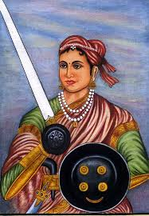

Introduction
Rani Lakshmibai was the queen of Jhansi and one of the bravest
freedom fighters of India. She played an important role in the revolt
against British rule.
Early Life
- Full Name: Manikarnika Tambe (Rani Lakshmibai)
- Born: 19 November 1828
- Birthplace: Varanasi, India
- Husband: Maharaja of Jhansi
Education
- Learned reading, writing, and martial arts
- Trained in horse riding and sword fighting
Career
- Became the Queen of Jhansi
- Fought against the British during the Revolt of 1857
- Led her army bravely in battles
Major Achievements
- One of the leading figures of the 1857 revolt
- Symbol of bravery and patriotism
- Inspired many freedom fighters
Challenges
- Faced strong British forces
- Continued fighting despite limited resources
Death
- Died: 18 June 1858
- Died in battle while fighting the British
Conclusion
Rani Lakshmibai is remembered as a symbol of courage, sacrifice,
and love for the nation.
⬅ Back